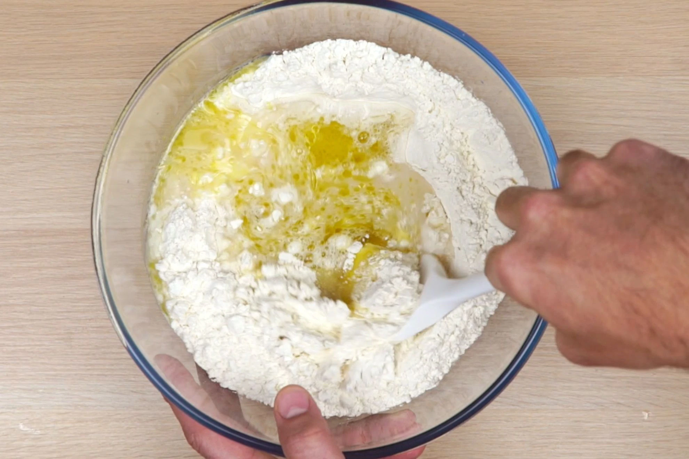
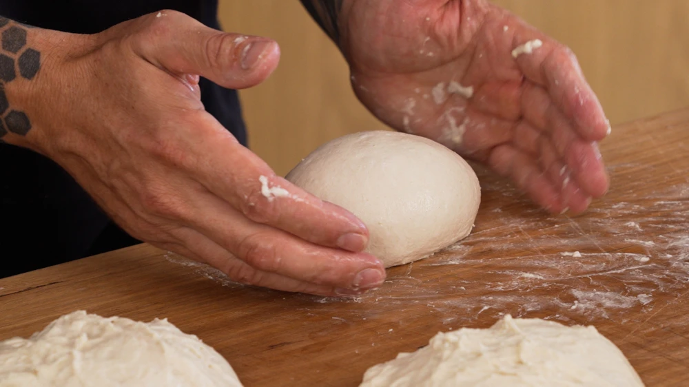
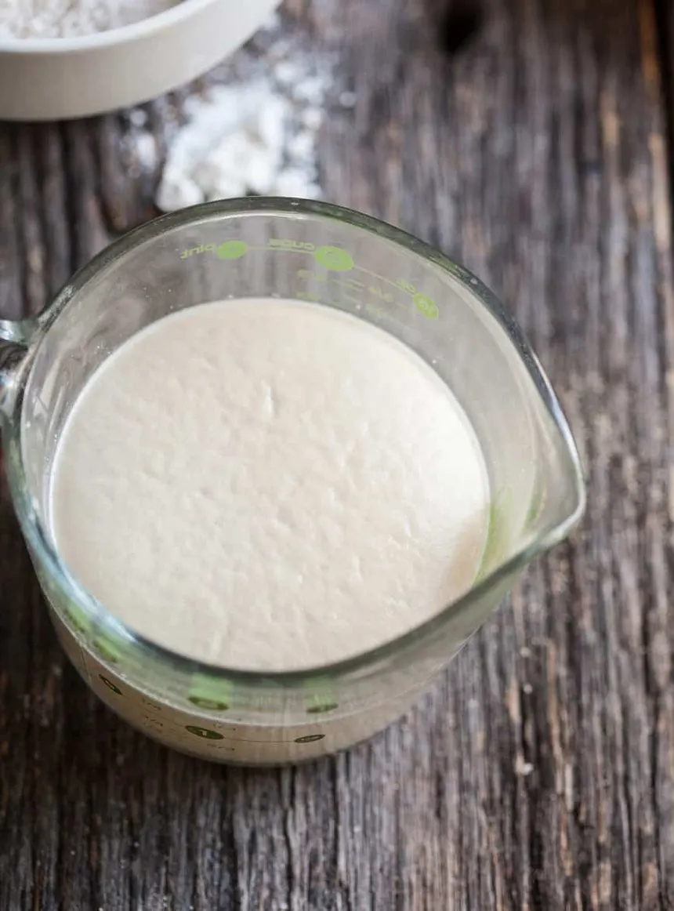

Crispy Pizza Dough
In order to make a nice crispy pizza, we have to learn how to make a dough first!
Even dough (pun intended) it seems complicated, it's actually very simple!
So let's get started!
Ingredients
To make classic pizza dough we need few ingredients.
- Lukewarm water
- flour (00 or Strong)
- Extra virgin olive oil
- Yeast
- Salt
- Sugar
Steps
- Bloom the yeast
- Pour flour into the bowl, add tsp of salt into it and mix them together.
-
Carefully add water into the bowl (3/4 of the cup),
followed by 2 Tbsp's of olive oil and start mixing the ingredients.
You'll slowly add more water if necessary.

-
After all the ingredients have been incorporated, get the mixture out of the bowl.
Sprinkle a little bit of flour on the counter and place your dough on top of it.
Now all you have to do is start kneading the dough with your hands,
while occasionally sprinkling flour, until it stops sticking to your fingers.

-
Finally, put a little bit of olive oil in a container, add the dough into it, and seal it.
For better results, let the dough rest in the fridge for 24 hours,
but if you're in a rush, you can leave it in the kitchen for 3-4 hours.
Remember, the longer it rests the better! Enjoy!
in order to make the yeast bloom, we have to add tsp of sugar into 100ml of lukewarm water.
Next, we add yeast and stir for a few seconds. Afterwards, we let it rest and bloom (rise).
